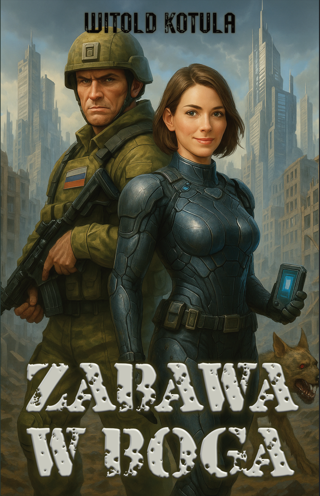

„Każdy z nas, choć raz w życiu, siada po drugiej stronie stołu i wydaje wyrok,
który nie należy do niego."
O czym jest ta historia
Zabawa w Boga to powieść o granicy, której nikt nie powinien przekraczać —
i o tym, co się dzieje, gdy ktoś jednak to robi. Witold Kotula prowadzi czytelnika
przez świat, w którym nauka, wiara i ludzka pycha spotykają się na jednej,
niebezpiecznej linii.
To książka o wyborach, których konsekwencji nie da się cofnąć, i o cenie,
jaką płaci się za to, by choć na chwilę poczuć się kimś więcej niż człowiekiem.
Wina
Bohaterowie mierzą się z decyzjami, których ciężaru nie da się odłożyć.
Stworzenie
Co się dzieje, gdy człowiek próbuje przejąć rolę, która nigdy nie była jego?
Granice nauki
Powieść pyta, gdzie kończy się odkrycie, a zaczyna przekroczenie.
Posłuchaj fragmentu audiobooka
Kawałek pierwszego rozdziała czytany przez lektora — za darmo, bez zobowiązań.
Powieść
O Książce

Lisa, hakerka z formacji „Sojusz”, budzi się po stuletniej hibernacji jako jedna z nielicznych
ocalałych po globalnej
katastrofie nuklearnej. Razem z towarzyszami próbuje odtworzyć wydarzenia sprzed ataku i odkryć,
czy świat naprawdę jest
pusty. „Zabawa w Boga” to postapokaliptyczna opowieść o przetrwaniu, nadziei i poszukiwaniu
człowieczeństwa w
rzeczywistości, gdzie granice moralności są bardziej rozmyte niż kiedykolwiek.
Powieść Witolda Kotuli łączy tempo dobrego thrillera z pytaniami,
które zostają z czytelnikiem na długo po przewróceniu ostatniej strony —
o to, ile jesteśmy w stanie poświęcić, by poczuć się panami własnego losu.
„Celem ataku były państwa zachodnie – Włochy, Francja, Niemcy, Austria, Polska, Czechy, Słowacja i USA."
Recenzje
„Powieść, która nie pozwala spać spokojnie jeszcze długo po lekturze."
— Oskarko2007
„Kotula pisze o wielkich pytaniach bez cienia moralizatorstwa."
— Małgorzata76
„...Nie tylko trzyma w emocjach, ale też zostawia czytelnika z pytaniami o przyszłość ludzkości i konsekwencje naszych
wyborów...”
— glowlion96
„Dynamiczna, pełna zwrotów akcji i świeżego spojrzenia na postapo — czyta się ją błyskawicznie i z ogromną
przyjemnością.”
— KajetanPuszek
Autor
O Pisarzu
Witold Kotula jest pisarzem zajmującym się prozą, w której nauka spotyka
się z pytaniami egzystencjalnymi. W swojej twórczości wielokrotnie wraca
do tematu granic — moralnych, naukowych i religijnych — jakie ludzie
gotowi są przekroczyć w imię własnych przekonań.
Zanim usiadł do pisania Zabawy w Boga, spędził lata zbierając
historie i rozmawiając z ludźmi, dla których pytanie „jak daleko można
się posunąć" nie było wyłącznie literacką figurą. — uzupełnij realną
biografię autora w tym miejscu.
Twórczość
Te doświadczenia, obserwacje i rozmowy stały się jednym ze źródeł inspiracji dla świata
przedstawionego w powieści oraz
dla bohaterów zmuszonych do podejmowania decyzji, w których granica między dobrem a złem przestaje
być oczywista.
Kotula chętnie wplata w swoje historie wątki fantastyczne, które na pierwszy rzut oka mogą wydawać
się całkowicie
nierealne. Jednocześnie pozostawia czytelnikowi myśl, że granica między fantastyką a rzeczywistością
bywa znacznie mniej
trwała, niż nam się wydaje. To, co dzisiaj uznajemy za niemożliwe, jutro może stać się częścią
codzienności. Historia
nauki wielokrotnie pokazywała przecież, że idee przypominające niegdyś literacką fantazję z czasem
materializowały się
dzięki kolejnym odkryciom, rozwojowi technologii i coraz głębszemu poznawaniu świata.
W tym sensie w jego pisaniu można odnaleźć echo sposobu myślenia znanego z twórczości Stanisława
Lema – nie poprzez
naśladowanie jego literatury, lecz poprzez przekonanie, że fantastyka może wyprzedzać rzeczywistość
i stawiać pytania,
na które nauka dopiero kiedyś spróbuje odpowiedzieć. Kotulę fascynują również nieznane dotąd
zakamarki historii,
zapomniane fakty i odkrycia, które potrafią zmienić nasze wyobrażenie o tym, co uważaliśmy za pewne.
Kotula nie próbuje dawać prostych odpowiedzi. Zamiast tego stawia pytania o odpowiedzialność,
moralność, cenę
przetrwania i o to, co pozostaje z człowieczeństwa, kiedy znane nam zasady przestają obowiązywać.
W jego pisaniu fantastyka jest przede wszystkim narzędziem do opowiadania o ludziach – ich lękach,
nadziei, słabościach
i wyborach podejmowanych wtedy, gdy stawką staje się coś więcej niż własne życie.
Audiobook
Posłuchaj „Zabawy w Boga"
Pełna wersja audio powieści Witolda Kotuli, czytana przez
lektora. Około 11 godzin nagrania, które można zabrać ze sobą wszędzie —
w drodze do pracy, na spacerze albo wieczorem, zamiast telewizora.
Darmowy fragment pierwszego rozdziału
41,49 zł
Jednorazowy zakup — dostęp bezterminowy, plik do pobrania.